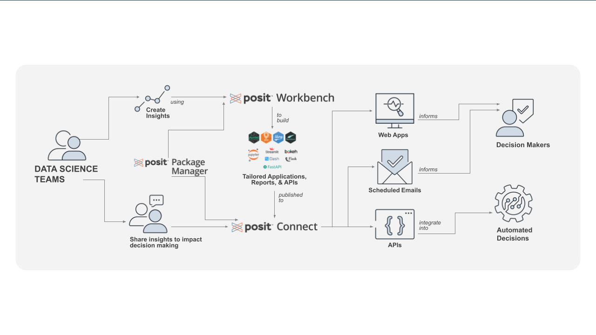

Posit Team gives your organization access to the leading modular platform for data science. An enterprise license includes unrestricted server deployment of the following tools:
Posit Team gives your organization access to the leading modular platform for data science. An enterprise license includes unrestricted server deployment of the following tools:

Posit’s Enterprise products are the ideal solution for Life Science and Healthcare organizations. With unlimited server activations, your team can set up high availability, maintain separate staging and production environments, and can leverage multiple server activations for your validated environments. In addition to providing multiple server activations, Posit Connect Enterprise offers full support of R and Python, including applications and APIs. Posit Package Manager Enterprise provides unlimited repositories for robust data science teams that have distinct requirements.
Posit’s Base and Standard products are best suited for smaller organizations building out their data science workflows when scalability, high availability, and environment validation aren’t immediate concerns. All Posit Base and Standard products are restricted to a single server activation*. Posit Connect Base offers support for Shiny apps written in R, RMarkdown, Quarto, and Jupyter products, while Posit Connect Standard offers additional support for Plumber APIs and Python applications. Posit Package Manager Base includes 1 repository and Posit Package Manager Standard 10 repositories.
*Posit Package Manager Standard includes an additional high availability server activation and 1 testing server activation.